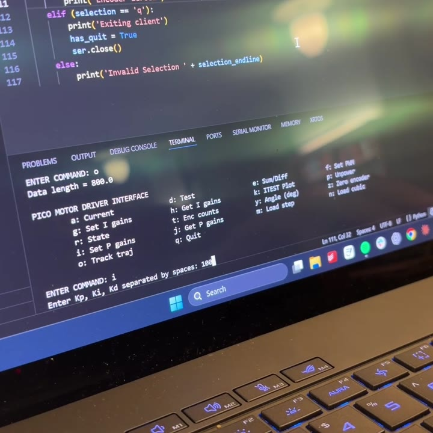
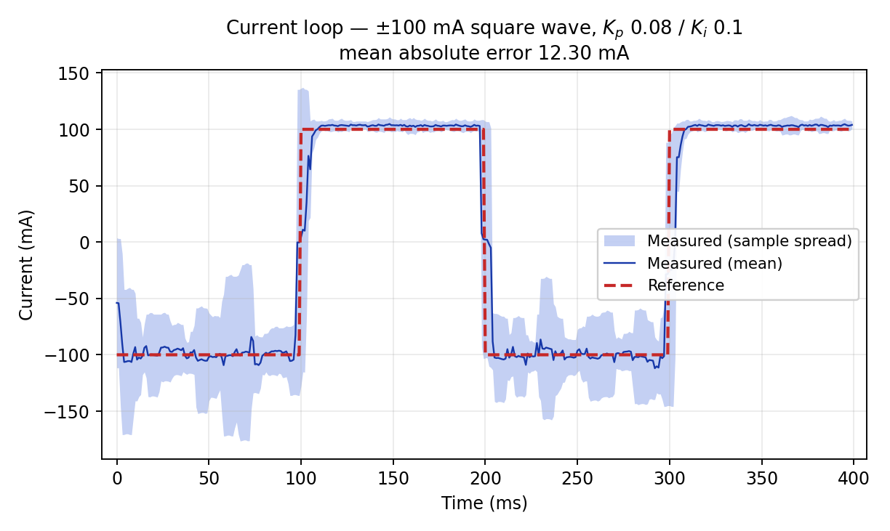
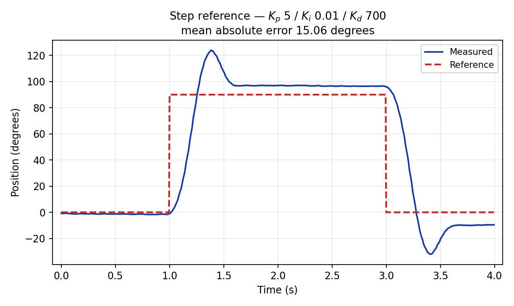
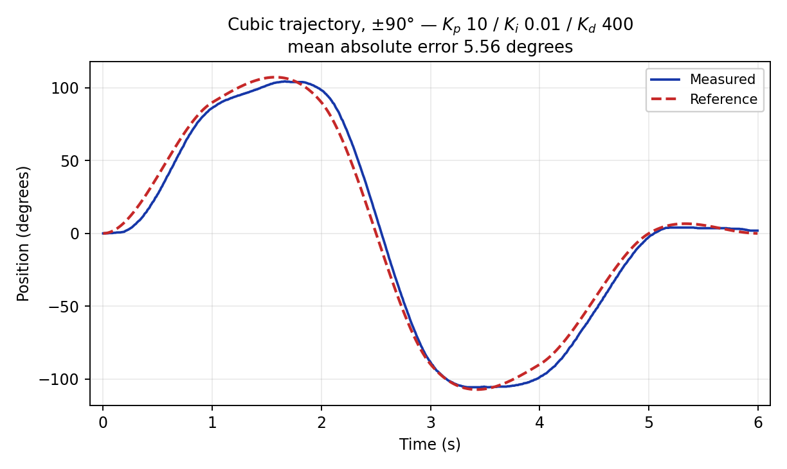
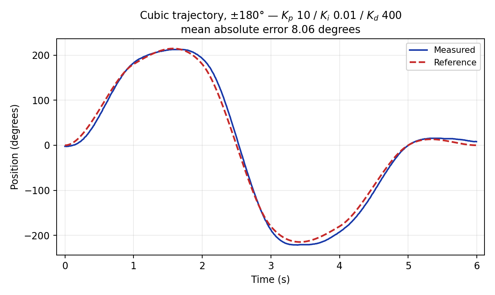

Closed-Loop DC Motor Control
Intro to Mechatronics (ME 333) — Northwestern · Winter 2026

{kind=link}
Bench setup with the wooden indicator arm, and the system layout sketch.
Overview
For ME 333 I built closed-loop control of a brushed DC motor with a Pico 2, an H-bridge, a current sensor, and an encoder. Torque in a brushed motor is proportional to current, not duty cycle, so the controller is a cascade: a fast current loop inside a slower position loop. I was the sole author of the firmware, control design, tuning, and host software. I:
- Wrote the firmware in C: a 1 kHz PI current loop nested inside a 200 Hz PID position loop
- Decoded the quadrature encoder on the RP2350’s PIO blocks — 1336 counts/rev, 0.27° resolution
- Built an 18-command Python client over USB serial for gains, trajectories, and logged data
- Hand-tuned both loops and measured tracking error on step and cubic references
Goals & Requirements
- Track arbitrary angular trajectories with no motion-controller IC anywhere in the system
- Close the loop on current first, so the position loop commands torque rather than duty cycle
- Keep the two loops genuinely cascaded, not independent
- Keep encoder counting off the CPU so it never competes with the control ISRs
- Log reference vs. actual on board and replay it to the host for analysis
Design
Both loops run in repeating-timer ISRs: the 1 kHz inner loop reads the INA219, computes the current error, and writes a signed duty cycle to the H-bridge; the 200 Hz outer loop reads the encoder, and its output is the current setpoint handed to the inner loop. A five-state machine (IDLE, PWM, ITEST, HOLD, TRACK) serves open-loop bring-up, current-loop testing, and trajectory tracking from the same timers. The Python client sets gains, uploads trajectories, and pulls logged arrays back for plotting.
{kind=link}

Python client — 18 single-key commands over USB serial
I tuned by hand, loop by loop: the current loop first against an automated ±100 mA square-wave test (ITEST), then the position loop on top of it. The current loop settled at 12.30 mA mean absolute error over 400 samples at 1 kHz.
Badly tuned on purpose — Kp 100, no derivative damping; the arm oscillates instead of settling.
Step 0→90°→0, tuned (Kp 5 / Ki 0.01 / Kd 700) — still overshoots, but recovers and holds.
Cubic trajectory, tuned — a smooth reference the motor can physically follow.
Tracking is measured as mean absolute error across every sample of a run. A cubic sweep of ±90° over 6 s (1200 samples) tracked to 5.56° at Kp 10 / Ki 0.01 / Kd 400; doubling the sweep to ±180° at the same gains grew the error to 8.06°. The step reference (0→90°→0) read 15.06° and overshot to about 127°.
{kind=link}

Current loop — 12.30 mA mean error; noisier on the negative half, a real asymmetry I never chased down
{kind=link}

Step — overshoot to ~127°, the clearest evidence of the missing anti-windup
{kind=link}

Cubic ±90° — error is almost entirely lag on the steep segments
{kind=link}

Cubic ±180° — same gains, double the sweep
Outcomes
- Cubic tracking: 5.56° mean absolute error at ±90°, 8.06° at ±180° at the same gains
- Current loop: 12.30 mA mean absolute error on a ±100 mA square wave
- Step: 15.06° with ~41% overshoot — both known defects (no anti-windup, raw derivative) visible in one number
- Every number is a measured run on the 6 V bench setup; nothing came from simulation